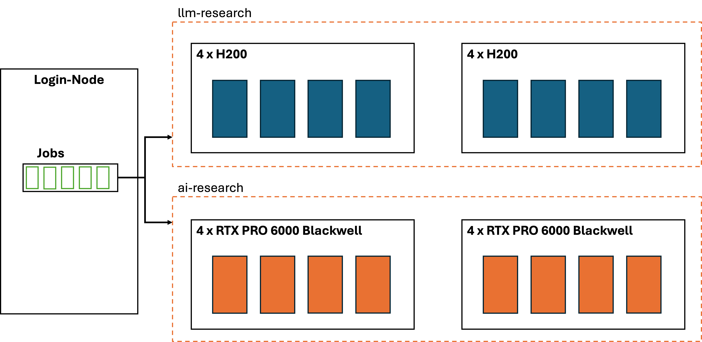

GenAI-Cluster Dokumentation¶
Allgemeines¶
Der Cluster¶
Der GenAI Cluster besteht aus fünf Nodes.

Nodes |
Beschreibung |
|---|---|
|
Worker-Node mit jeweils 4 NVIDIA RTX PRO 6000 Blackwell Server Edition GPUs |
|
Worker-Node mit jeweils 4 NVIDIA H200 NVL GPUs |
|
Login-Node. Von hier können Jobs auf dem Cluster gestartet werden |
Um sich mit einem Knoten zu verbinden, muss zum Hostname noch .rz.tu-clausthal.de hinzugefügt werden.
Beispiel:
ssh fi89@cloud-201.rz.tu-clausthal.de
Slurm¶
Slurm ist ein Programm, welches Rechenaufgaben (sogenannte Jobs) auf die Rechner in unserem Cluster aufteilt und ihnen Ressourcen zuteilt. Welcher Rechner (Node) ausgewählt wird, entscheidet Slurm daran wo die vom Job angefragten Ressourcen gerade verfügbar sind. Slurm sorgt außerdem dafür, dass jeder Job jeweils nur die Ressourcen nutzen kann, die angefordert wurden. So ist es möglich, dass Jobs parallel ausgeführt werden können, ohne sich gegenseitig zu behindern. Falls die angeforderten Ressourcen nicht direkt bereitgestellt werden können, reiht Slurm den Job in eine Warteschlange ein. Er wird dann, sobald die Ressourcen wieder verfügbar sind, ausgeführt.
Account-Limits¶
Wie viele Ressourcen die Nutzenden verwenden dürfen hängt davon ab, welcher Gruppe sie zugeordnet sind. Aktuell gibt es folgende Gruppen:
Gruppe |
Beschränkungen |
|---|---|
|
Maximale Joblänge: 36h |
|
Maximale Joblänge: 36h |
|
Maximale Joblänge: 24h, Maximale Anzahl an gleichzeitigen Jobs: 1, Erlaubte GPU-Typen: |
|
Maximale Joblänge: 12h, Maximale Anzahl an gleichzeitigen Jobs: 1, Erlaubte GPU-Typen: |
Standardmäßig laufen alle Accounts in der Gruppe ai-research, da die RTX 6000 PRO für die meisten Aufgaben ausreichend sind. Mitgliedschaft in der llm-research Gruppe kann per E-Mail (steffen.ottow@tu-clausthal.de) unter kurzer Begründung weshalb die RTX 6000 PRO nicht ausreichend sind, für einen maximalen Zeitraum von 21 Tagen beantragt werden.
Partitionen¶
Partitionen sind Gruppen von Nodes. Sie werden verwendet, um Nodes und Jobs zu sortieren. Bei uns gibt es die folgenden Partitionen
Partition |
Beschreibung |
|---|---|
|
Enthält alle Nodes. Auf dieser Partition können keine interaktiven Jobs ausgeführt werden |
|
Enthält nur die Nodes mit |
Slurm-Befehle¶
Cluster-Status¶
Nodes¶
Der aktuelle Status und die Auslastung der jeweiligen Nodes kann mit sinfo abgefragt werden.
sinfo
Queue¶
Der Befehl squeue zeigt an, welche Jobs aktuell laufen oder in der Warteschlange eingereiht sind. Kann ein Job nicht ausgeführt werden, wird im Feld Reason angezeigt warum.
squeue
Interaktiv arbeiten¶
Alle interaktiven Jobs müssen auf der interactive-Partition ausgeführt werden und ein Zeitlimit angeben. Das muss bei jedem interaktiven Job durch die Kommandozeilenoptionen -p und -t angegeben werden. Um interaktiv zu arbeiten gibt es folgende Möglichkeiten:
Ein Command mit direktem Output ausführen¶
srun -p interactive <command>
Beispiel:
srun -p interactive -t 6:00:00 --gpus h200:2 nvidia-smi
Diese Beispiel führt das Kommando nvidia-smi mit direktem Output, zwei H200 GPUs und einem Zeitlimit von sechs Stunden aus.
Ein Command interaktiv in einem Pseudoterminal ausführen¶
srun -p interactive --pty <command>
Beispiel:
srun -p interactive --pty -t 4:00:00 --gpus rtx_pro_6000 nano
Diese Beispiel führt interaktiv den Nano-Texteditor mit einer RTX 6000 GPU und einem Zeitlimit von vier Stunden aus.
Eine Shell auf einem Knoten öffnen¶
salloc -p interactive
Beispiel:
salloc -p interactive -t 5:00:00 --gpus h200:3
Diese Beispiel öffnet eine interaktive Shell mit drei H200 GPUs und einem Zeitlimit von fünf Stunden.
Per SSH in eine interaktive Session einloggen¶
Wenn ein interaktiver Job gestartet wurde, kann sich auf die für den Job ausgewählte Node mit SSH eingeloggt werden. Für die SSH-Session gelten dann die gleichen Ressourcen- und Zeitbeschränkungen, wie für den Job. Welche Node ausgewählt wurde, wird von squeue und bei salloc im Shell-Prompt angezeigt. Die Addresse der Knoten ist <hostname-des-knoten>.rz.tu-clausthal.de. Ein beispielhafter SSH-Login in einen interaktiven Job des Nutzers fi89 auf der Node cloud-202 könnte so aussehen:
ssh fi89@cloud-202.rz.tu-clausthal.de
Batch-Skripte¶
Längere Jobs werden am besten mit Batch-Skripten ausgeführt. Batch-Skripte enthalten sowohl die Befehle, die für den Job ausgeführt werden sollen, als auch Informationen über die benötigten Ressourcen. Sie arbeiten im Hintergrund und haben auf unserem Cluster längere Zeitlimits als interaktive Jobs. Ihr Output wird nicht auf der Shell ausgegeben, sondern in eine Datei im gleichen Verzeichnis wie das Skript geschrieben. Sie hat standardmäßig den Namen “slurm-
Ein beispielhaftes Batch-Skript sieht so aus:
#!/bin/bash
#SBATCH -o /home/fi89/stdout.log
#SBATCH -e /home/fi89/stderr.log
#SBATCH --gpus rtx_pro_6000:2
echo "Hello batch"
echo "Sleeping for 2 minutes"
sleep 120
echo "Done sleeping. Goodbye!"
Kommandozeilenoptionen aus der Tabelle unten können hier direkt im Skript hinter einem #SBATCH angegeben werden. Mit -o und -e kann geändert werden, in welche Datei der Output bzw. eventuelle Error-Messages geschrieben werden sollen.
Um ein Batch Skript auszuführen wird der Befehl sbatch verwendet.
sbatch skript.sh
Ressourcen-Flags¶
Welche Ressourcen ein Job anfordert, wird durch Kommandozeilenoptionen/Flags hinter den Slurm Commands (srun, sbatch und salloc) oder im Batch Skript angegeben. Ein paar häufige Flags sind:
Option |
Beschreibung |
|---|---|
|
Ein Zeitlimit für den Job. Wird entweder in Minuten, im Format |
|
Anzahl an GPUs im Format |
|
Partition, auf der der Job ausgeführt werden soll |
|
Anzahl an parrallel ausgeführten Instanzen des Jobs (Ermöglicht paralleles Rechnen auf mehreren Nodes) |
|
Anzahl an CPU-Kernen pro Instanz des Jobs |
|
Anzahl an CPU-Kernen pro GPU |
|
Arbeitsspeicher in MB |
|
Reservierungs-ID |
Alle Optionen der Befehle finden sich auf den jeweiligen Manpages. Diese finden Sie hier: srun, sbatch, salloc
Tipps und Problembehebung¶
Nachdem ein Job submittet wurde, bietet es sich an, noch einmal mit
squeueden Status des Jobs zu überprüfen um Mögliche Fehler zu erkennen. Überschreitungen der Ressourcenlimits werden z.B. nur dort angezeigt.Der Fehler
Unable to allocate resources: Requested partition configuration not available nowwird meist durch ein fehlendes Zeitlimit oder eine Anfrage von mehr Ressourcen als physisch verfügbar ausgelöst
Support¶
Bei Fragen und technischen Problemen sind wir erreichbar unter: steffen.ottow@tu-clausthal.de.